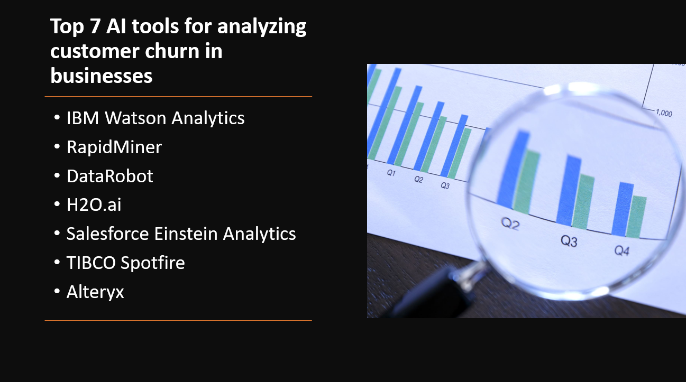

Introduction
Customer churn, or the rate at which customers discontinue their relationship with a business, is a critical metric for companies across industries. Understanding and predicting customer churn is essential for reducing customer attrition and improving business outcomes. Artificial Intelligence (AI) tools offer advanced analytics and machine learning capabilities to analyze customer churn patterns and identify potential churners.
In this blog post, we will explore the top seven AI tools for analyzing customer churn in businesses and their contributions to customer retention strategies.
- AI tools identify patterns and early warning signs of customer churn.
- AI algorithms provide precise predictions of customer churn likelihood.
- AI tools enable data-driven decisions by analyzing factors contributing to customer churn.
- AI tools segment customers for targeted and tailored retention approaches.
- AI tools automate churn analysis, saving time and resources.
Here Are Our Top 7 AI tools for analyzing customer churn in businesses:
1: IBM Watson Analytics
Overview and Importance
IBM Watson Analytics is an advanced data analysis and visualization platform that combines the power of artificial intelligence and machine learning with an intuitive and user-friendly interface. It enables users to uncover insights from their data quickly and easily, without the need for extensive technical expertise.
Learn more about IBM Watson Analytics
Key Features and Capabilities
Natural language querying
- IBM Watson Analytics allows users to interact with their data using natural language queries, enabling them to ask questions about their data in plain English and receive visualizations and insights based on the query.
Predictive analytics
- The platform includes built-in machine learning algorithms for performing predictive analytics, allowing users to create models and make data-driven predictions for future outcomes.
Visual data exploration
- IBM Watson Analytics provides a rich set of interactive visualizations and dashboards, enabling users to explore and understand their data through charts, graphs, and maps.
2: RapidMiner
Overview and Importance
RapidMiner is a powerful and comprehensive data science platform that empowers organizations to efficiently extract valuable insights from their data. With its user-friendly interface and extensive range of analytical tools, RapidMiner enables users to solve complex business problems, drive innovation, and make data-driven decisions.
Learn more about RapidMiner
Key Features and Capabilities
Drag-and-drop interface
- RapidMiner offers a visual and intuitive drag-and-drop interface that allows users to easily build and execute data workflows without the need for extensive coding knowledge.
Advanced analytics
- The platform provides a wide range of advanced analytics techniques, including machine learning, text mining, time series analysis, and more, enabling users to extract valuable insights and patterns from their data.
Automated modeling
- RapidMiner incorporates automated modeling capabilities, allowing users to automatically generate and compare multiple machine learning models to find the best-performing one.
3: DataRobot
Overview and Importance
DataRobot is an automated machine learning platform that revolutionizes the way organizations approach data science. It enables users to build and deploy highly accurate machine learning models at scale, empowering businesses to make data-driven decisions and accelerate their AI initiatives.
Learn more about DataRobot
Key Features and Capabilities
Automated machine learning
- DataRobot automates the process of building and optimizing machine learning models without manual intervention.
Feature engineering
- The platform offers a suite of techniques to transform and preprocess data, uncovering meaningful patterns and relationships.
Model deployment and monitoring
- DataRobot seamlessly integrates with deployment options and provides monitoring capabilities for tracking and retraining models.
4: H2O.ai
Overview and Importance
H2O.ai is an open-source machine learning platform that enables organizations to build and deploy advanced analytics and machine learning models. It is designed to simplify and democratize the process of developing machine learning solutions, making it accessible to data scientists, analysts, and business users alike.
Learn more about DataRobot
Key Features and Capabilities
AutoML
- H2O.ai's AutoML automates the machine learning pipeline, from data preprocessing to model selection, saving time and effort.
Distributed computing
- The platform's distributed computing enables processing and analysis of large datasets across multiple nodes for improved scalability and performance.
Model interpretability
- H2O.ai offers tools for model interpretability, allowing users to understand and explain the decisions made by their models.
5: Salesforce Einstein Analytics
Overview and Importance
Salesforce Einstein Analytics is an AI-powered analytics platform that brings the power of artificial intelligence and machine learning to business intelligence and data analytics. It enables organizations to gain valuable insights from their data, uncover patterns, and make data-driven decisions to drive business growth and improve customer experiences.
Learn more about Salesforce Einstein Analytics
Key Features and Capabilities:
AI-powered analytics
- Salesforce Einstein Analytics automates data analysis, discovery, and predictive modeling using AI and machine learning, enabling users to uncover valuable insights and make data-driven decisions.
Embedded analytics
- The platform seamlessly integrates with Salesforce CRM, providing users with embedded analytics and insights within their Salesforce environment for real-time decision-making and improved customer interactions.
Interactive visualization
- Salesforce Einstein Analytics offers intuitive and interactive data visualization capabilities, empowering users to create dynamic dashboards and explore data through visualizations, enabling better understanding and analysis of their data.
6: TIBCO Spotfire
Overview and Importance
TIBCO Spotfire is an advanced analytics and data visualization platform that enables organizations to gain insights from their data and make data-driven decisions. It provides powerful tools and capabilities to explore, analyze, and visualize data, allowing users to uncover patterns, trends, and relationships in their data for better business outcomes.
Learn more about TIBCO Spotfire
Key Features and Capabilities
Interactive data visualization
- TIBCO Spotfire empowers users to create interactive visualizations, such as charts, graphs, and maps, to explore and present data in a meaningful and engaging way.
Advanced analytics and predictive modeling
- The platform provides advanced analytics capabilities, including statistical analysis and predictive modeling, enabling users to uncover patterns, trends, and make accurate predictions from their data.
Collaboration and sharing
- TIBCO Spotfire facilitates seamless collaboration and sharing of data insights, allowing users to share interactive dashboards, reports, and collaborate on data analysis projects to drive informed decision-making as a team.
7: Alteryx
Overview and Importance
Alteryx is a powerful data analytics and data preparation platform that allows users to easily blend, analyze, and visualize data from various sources. It offers a comprehensive suite of tools for data cleansing, data integration, predictive analytics, and reporting, making it a valuable solution for data-driven organizations.
Learn more about Alteryx
Key Features and Capabilities
Data blending and integration
- Alteryx allows users to blend and integrate data from multiple sources, creating unified datasets for analysis and gaining a comprehensive view of their data.
Advanced analytics and predictive modeling
- With Alteryx, users can perform advanced analytics tasks such as statistical analysis, predictive modeling, and machine learning, empowering them to uncover insights and make data-driven decisions.
Workflow automation and scheduling
- Alteryx automates data workflows and allows for scheduling of data preparation and analysis tasks, increasing efficiency and ensuring timely and accurate analyses.
Conclusion
AI tools play a significant role in analyzing customer churn in businesses by providing valuable insights and predictive capabilities. The top seven AI tools for customer churn analysis are IBM Watson Analytics, RapidMiner, DataRobot, H2O.ai, Salesforce Einstein Analytics, TIBCO Spotfire, and Alteryx.
Here are their key features, capabilities, and advantages:
IBM Watson Analytics: Offers advanced analytics and machine learning capabilities, allowing businesses to identify patterns and factors influencing customer churn.
RapidMiner: Provides a user-friendly interface and a wide range of data analysis and modeling techniques to predict and understand customer churn behavior.
DataRobot: Utilizes automated machine learning to develop accurate churn prediction models, empowering businesses to take proactive measures.
H2O.ai: Offers a scalable and distributed platform for building churn prediction models, utilizing various machine learning algorithms.
Salesforce Einstein Analytics: Leverages AI-powered analytics to identify customer behavior patterns and factors contributing to churn within the Salesforce ecosystem.
TIBCO Spotfire: Enables businesses to analyze and visualize churn-related data, facilitating data-driven decision-making and targeted retention strategies.
Alteryx: Provides a comprehensive analytics platform, allowing businesses to blend, analyze, and model churn-related data for actionable insights.
Customer churn analysis has a significant impact on customer retention strategies and business performance:
Retention strategies: By identifying key churn indicators and understanding customer behavior, businesses can implement targeted retention initiatives to reduce churn rates.
Business performance: Analyzing customer churn helps businesses identify areas of improvement, optimize customer experiences, and enhance overall business performance.
It is crucial for businesses to leverage these AI tools to gain actionable insights and implement effective retention strategies. By utilizing these tools, businesses can accurately predict customer churn, proactively address potential issues, and foster long-term customer relationships. Embracing AI-driven customer churn analysis enables businesses to stay ahead in a competitive market, increase customer loyalty, and drive sustainable growth.